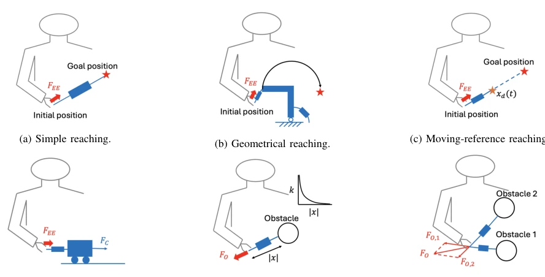
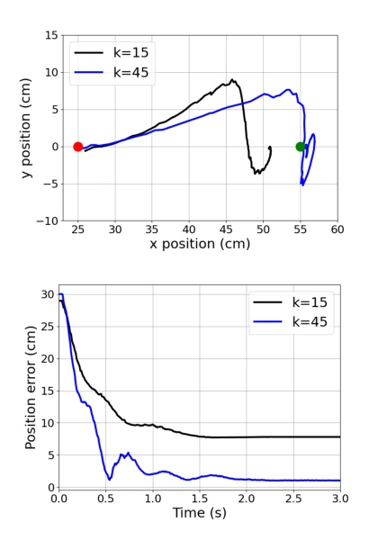
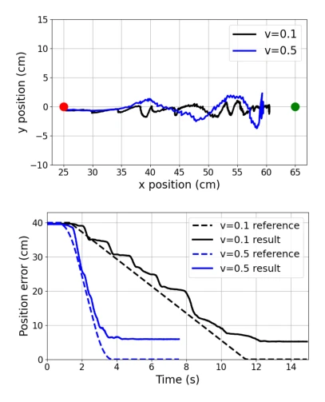
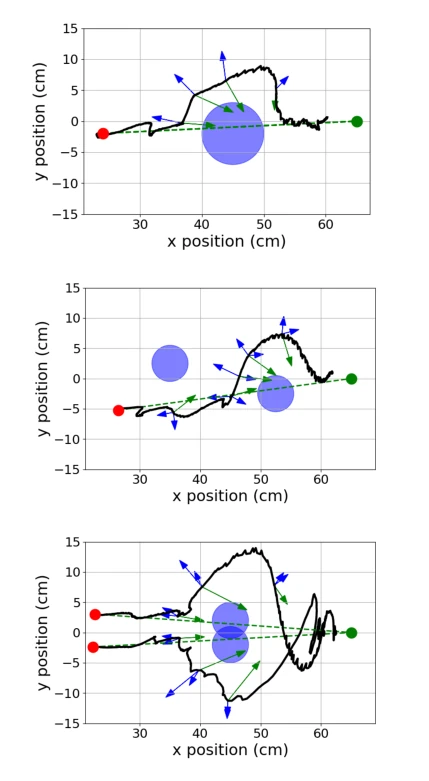
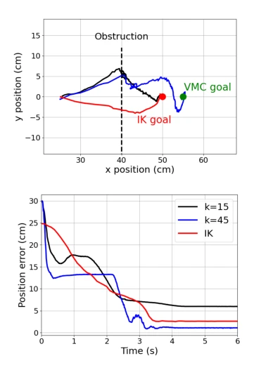
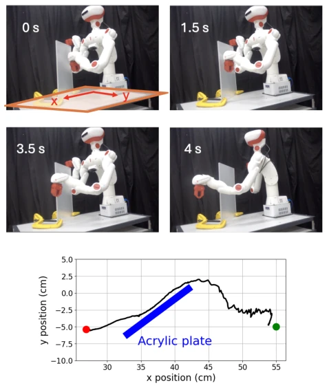

This paper attempts to integrate planning and control using "virtual springs", which sounds very physical and intuitive, but at the cost of accuracy. The authors extended VMC from legged robots to manipulators, developing six virtual model designs. The benefit is achieving a "soft landing" when encountering obstacles, without calculating complex avoidance paths; the drawback is that the trajectory is certainly not optimal, and parameter tuning relies entirely on trial and error. For scenarios pursuing industrial-grade accuracy, this scheme might be too "fate-dependent". However, the safety in unknown environments is indeed stronger than traditional inverse kinematics, after all, the forces are much smaller. It counts as adding a brick to the "soft control" of embodied intelligence, but is still far from general intelligence. It proves the value of physical intuition in control, but does not solve the pain point of automatic parameter tuning, relies on trial and error, is difficult to deploy on a large scale, and belongs to a typical "sacrificing accuracy for safety" pragmatic solution.
Safe planning for traditional manipulators in cluttered environments remains a challenge. Existing solutions such as PRM [1], RRT [2], and potential field methods [3] rely on complex perception and planning, and are often implemented via inverse kinematics combined with high-gain PID, causing the robot to be "stiff" and insensitive to external disturbances (such as unknown obstacles). Although VMC [4] has been used for legged robots, its application in manipulation tasks is insufficient. This paper aims to address the shortcomings of traditional methods in real-time interaction and uncertainty adaptation, intuitively designing controllers through physical mechanisms to achieve safe, predictable compliant motion, rather than pursuing absolute trajectory optimality. Traditional methods are computationally expensive and lack interactivity, making them difficult to adapt to unstructured environments, while VMC guarantees stability through passivity theory but sacrifices optimality, requiring a trade-off between accuracy and compliance.
The core framework couples virtual mechanical structures (springs/dampers) with robot dynamics. Virtual forces are mapped to joint torques via the transpose of the Jacobian matrix, without requiring inverse kinematics. Specifically including six virtual model designs: (1) Simple arrival, spring-damper between end-effector and target; (2) Geometric arrival, constraining trajectory; (3) Moving reference, target moves over time to smooth force; (4) Force-driven, virtual cart controls contact force; (5) Obstacle avoidance, nonlinear repulsive spring; (6) Multi-obstacles. All designs are based on energy shaping and damping injection, utilizing passivity theory to guarantee stability. In the control architecture, the virtual mechanism state depends on joint position and velocity, and torque commands are converted to current via linear approximation. This method unifies planning and control within a virtual mechanics model, achieving impedance regulation by adjusting virtual stiffness, making robot behavior predictable and easy to debug, without requiring complex state estimation.

Fig. 1: (a)-(f) Virtual mechanisms designed for satisfying different planning goals.
Validated on the Sciurus17 humanoid robot. Compared simple arrival (different stiffness) and moving reference arrival. Known obstacle experiments demonstrate avoidance effects, multi-obstacle experiments demonstrate local minima problems. Unknown obstacle experiments (human hand blocking, acrylic plate) show VMC can safely pause or slide, while the IK scheme contact force reaches up to 35.77N, VMC only 4.53N. Results indicate VMC sacrifices trajectory accuracy for interaction safety, parameter tuning relies on trial and error. Experiments cover three scenarios: no disturbance, known obstacle, and unknown obstacle, verifying the robustness of the method. Especially in human hand interaction experiments, VMC can stop immediately and recover, demonstrating good physical interaction characteristics, proving its adaptability in uncertain environments.

Fig. 4: Simple reaching with different stiffness. Black line: k = 15. Blue line: k = 45. Red dot: starting position. Green dot: goal. Top: trajectory of the end effector on the x-y plane. Bottom: time-evolution of the reach error.

Fig. 5: Moving-reference reaching with different speeds. Black line: 0.1 m/s. Blue line: 0.5 m/s. Red dot: starting position. Green dot: goal. Top: trajectory of the end effector on the x-y plane. Bottom: time-evolution of reference and actual distances from the target.

Fig. 6: Obstacle and multi-obstacle avoidance with known obstacles. Black line: robot trajectory. Blue area: cylindrical obstacles. Red dot: starting position. Green dots: ending positions. Green line: reference trajectory, 0.1 m/s. The arrows show the virtual mechanism forces. Blue arrow: force generated by obstacle avoidance virtual model. Green arrow: force generated by moving-reference reaching virtual model.

Fig. 7: Simple reaching under undetected human inter- action. The end effector is blocked by a person at x = 40 cm. Black line: (2), k = 15. Blue line: (2), k = 45. Red line: inverse kinematics. Green dot: goal for VMC. Red dot: goal for inverse kinematics (which is different from VMC due to its inability to reach further using torso). Top: trajectory of the end effector on the x-y plane. Bottom: time-evolution of the reach error.

Fig. 9: Moving-reference reaching under undetected ob- stacle. Top snapshots: 0s - contact established, 1.5s - sliding, 3.5s - obstacle cleared, 4s - goal reached. Bottom figure: perturbed end effector trajectory. Black - trajectory, red dot - starting position, green dot - goal, blue - acrylic plate.